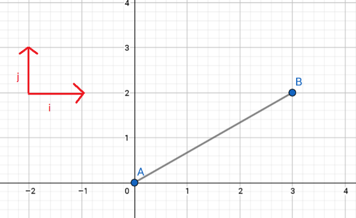

Vektorit: perusteita
Contents
Vektorit: perusteita#
Tällä opintojaksolla otetaan matematiikan uudeksi työvälineeksi vektorit. Fysiikassa vektorilla voidaan kuvata suuretta, jolla on sekä suuruus että suunta. Esimerkiksi kun autolla ajetaan nopeudella 80 km/h itään, niin nopeuden suuruus (vauhti) on 80 km/h ja suunta itään. Vektoreilla käsitellään myös monimutkaisempia fysiikan käsitteitä, esimerkiksi maapallon oman magneettikentän suuruus ja suunta vaihtelevat eri puolilla maapalloa ja myös ajallisesti.
Matematiikassa vektoreita käytetään usein apuna geometrian ongelmissa. Tällöin vektorien ajatellaan olevan tason tai avaruuden pisteiden välisiä janoja. Tällaisen vektorin pituus on sama kuin lyhin etäisyys kyseisten pisteiden välillä. Vektorin suunta määritellään suhteessa käytössä olevaan koordinaatistoon, esimerkiksi kulmana \((x,y)\)-koordinaatiston \(x\)-akselista mitattuna.
Merkintätapoja#
Vektoria merkitään jollakin kirjaimella siten, että merkinnän päällä on viiva tai nuoli, esim. \(\vec{v}\). Tässä oppimateriaalissa merkintänä toimii nuoli, mutta käsin laskettaessa viiva on helpompi ja yhtä hyvä merkintätapa. Vektorin merkkinä voi olla myös lihavointi, esim. vektori \(\mathbf{v}\).
Jos vektori yhdistää jotkin tason tai avaruuden pisteet, niin vektoria usein merkitään sen alku- ja loppupisteen kirjaimilla, esim. pisteiden \(A\) ja \(B\) välillä on vektori \(\vec{AB}\) tai \(\mathbf{AB}\).
Kantavektorit#
Miten vektoreita voidaan käyttää yhdistämään avaruuden pisteitä? Esitetään pisteet kolmiulotteisessa suorakulmaisessa koordinaatistossa eli \((x,y,z)\)-koordinaatistossa. Otetaan pisteiden välillä liikkumiseen avuksi ns. kantavektorit \(\vec{i}\), \(\vec{j}\) ja \(\vec{k}\) (tai \(\mathbf{i}, \mathbf{j}, \mathbf{k}\)). Ne ovat toisiaan vastaan kohtisuorat vektorit, joiden pituus on 1. Tällä opintojaksolla, ja muutenkin yleisesti kirjallisuudessa, kantavektorien \(\vec{i}\), \(\vec{j}\) ja \(\vec{k}\) suunnat ovat samat kuin \(x\)-akselin, \(y\)-akselin ja \(z\)-akselin suunnat.
Siirtymävektorit#
Kun siirrytään pisteestä toiseen, niin siirtymiseen tarvittava vektori (siirtymävektori) muodostetaan lineaarikombinaationa kantavektoreista. Lineaarikombinaatio tarkoittaa sitä, että eri suuntaiset kantavektorit lasketaan yhteen joillakin reaalilukukertoimilla painotettuna. Tällöin vektorille \(\mathbf{a}\) muodostuu merkintätapa \(\vec{a}=a_x \vec{i} + a_y \vec{j} + a_z \vec{k}\). Eräs mahdollinen merkintätapa on myös \(\vec{a}=(a_x,a_y,a_z)\), mutta tällöin täytyy olla tarkkana siitä, onko kyseessä vektori (jonka tunnistaa yläviivasta) vai koordinaatiston piste.
Kantavektoreita kertoimineen sanotaan vektorin komponenteiksi. Tason, eli kaksiulotteisen suorakulmaisen koordinaatiston, vektoreille riittää merkitä \(x\)- ja \(y\)-suuntaiset komponentit.
Laskukaava pisteiden \(A=(x_a,y_a,z_a)\) ja \(B=(x_b,y_b,z_b)\) väliselle vektorille on \(\vec{AB}=(x_b-x_a) \vec{i} + (y_b-y_a) \vec{j} + (z_b-z_a) \vec{k}\).

Esim. Vektoria, joka kuvaa siirtymää ”kolme askelta oikealle ja kaksi askelta ylös” pisteestä \(A\) pisteeseen \(B\), voidaan merkitä seuraavasti: \(\vec{AB}=3\vec{i} + 2\vec{j}\) tai \(\vec{AB}=(3,2)\). Vektorin komponentit ovat \(3\vec{i}\) ja \(2\vec{j}\).
Esim. Esitä siirtymä koordinaatiston pisteestä \((2,4,6)\) pisteeseen \((5,-1,7)\) vektorina.
Ratkaisu
Voidaan päätellä:
\(x\)-suunnassa pitää siirtyä 3 askelta, jotta \(x\)-koordinaatti muuttuu arvosta 2 arvoon 5.
\(y\)-suunnassa pitää siirtyä 5 askelta taaksepäin, siis lukuarvona -5, jotta \(y\)-koordinaatti muuttuu arvosta 4 arvoon -1.
\(z\)-suunnassa pitää siirtyä 1 askel eteenpäin, jotta \(z\)-koordinaatti muuttuu arvosta 6 arvoon 7.
Vektori on siis \(\vec{AB}=3 \vec{i} -5 \vec{j} + {k}\).
Vektori voidaan muodostaa myös suoraan laskukaavalla:
\(\vec{AB}=(5-3) \vec{i} + (-1-4) \vec{j} + (7-6) \vec{k}\).
Paikkavektorit#
Pisteen paikkaa koordinaatistossa voidaan kuvata paikkavektorilla. Se tarkoittaa vektoria pisteestä \(O=(0,0,0)\) annettuun pisteeseen. Esimerkiksi pisteen \(A=(4,2,1)\) paikkavektori on \(\vec{OA}=4 \vec{i} + 2\vec{j} + \vec{k}\).
Kun koordinaatistossa siirrytään pisteestä toiseen, niin päätepisteen paikkavektori saadaan lisäämällä lähtöpisteen paikkavektoriin siirtymävektori. Yhteenlasku pitää tehdä komponenteittain: kantavektorien avulla esitetyt vektorit lasketaan yhteen (tai vähennetään toisistaan) siten, että samojen kantavektorien kertoimet lasketaan yhteen (tai vähennetään toisistaan). Siis jos
\(\vec{a}=a_x \vec{i} + a_y \vec{j} +a_z \vec{k}\), ja \(b=b_x \vec{i} +b_y \vec{j} +b_z \vec{k}\), niin
\(a\pm b=(a_x\pm b_x) \vec{i}+(a_y\pm b_y)\vec{j}+(a_z\pm b_z)\vec{k}\).
Esim. Henkilö siirtyy kaksiulotteisen koordinaatiston pisteestä \(A=(1030,550)\) siirtymävektorin \(\vec{AB}=-564 \vec{i}-205 \vec{j}\) verran. Mihin pisteeseen \(B\) hän päätyy?
Ratkaisu
Pistettä \(A\) vastaava paikkavektori on \(\vec{OA}=1030 \vec{i}+550 \vec{j}\).
Päätepisteen paikkavektori on \(\vec{OB}=\vec{OA}+\vec{AB}=(1030+(-564)) \vec{i} +(550+(-205)) \vec{j}=466 \vec{i}+345 \vec{j}\).
Päätepisteen koordinaatit ovat siis \(B=(466,345)\).
Huomautus
Vektoreista \(\vec{i}\), \(\vec{j}\) ja \(\vec{k}\) voidaan muodostaa yhdistelmiä, joilla pääsee siirtymään mistä tahansa suorakulmaisen koordinaatiston pisteestä mihin tahansa toiseen pisteeseen.
Tarkastellaan siirtymää kaksiulotteisessa koordinaatistossa. Valitaan vektoreiksi, joiden avulla liikutaan, \(\vec{v_1}=\frac{1}{\sqrt{2}}\vec{i}-\frac{1}{\sqrt{2}}\vec{j}\) ja \(\vec{v_2}=\frac{1}{\sqrt{2}}\vec{i}+\frac{1}{\sqrt{2}}\vec{j}\).
Nyt esimerkiksi pisteestä \((0,0)\) pääsee pisteeseen \((3,1)\) liikkumalla \(\sqrt{2}\) askelta vektorin \(\vec{v_1}\) suunnassa ja \(2\sqrt{2}\) askelta vektorin \(v_2\) suunnassa:
\(0 \vec{i} + 0 \vec{j} + \sqrt{2} \left(\frac{1}{\sqrt{2}}\vec{i}-\frac{1}{\sqrt{2}}\vec{j}\right) + 2\sqrt{2}\left(\frac{1}{\sqrt{2}}\vec{i}+\frac{1}{\sqrt{2}}\vec{j}\right)\)
\(= \vec{i} - \vec{j} + 2 \vec{i} + 2\vec{j} = 3 \vec{i} + \vec{j}\).